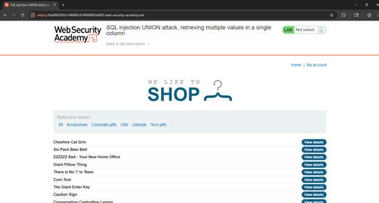
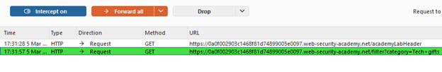
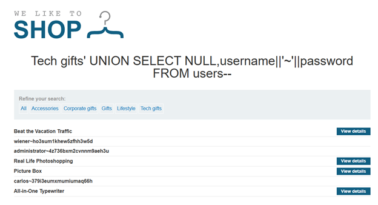
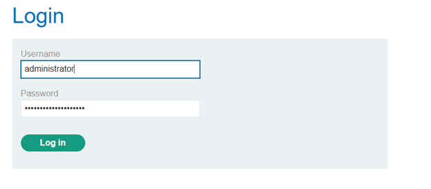
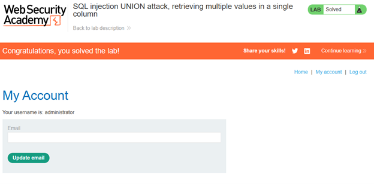
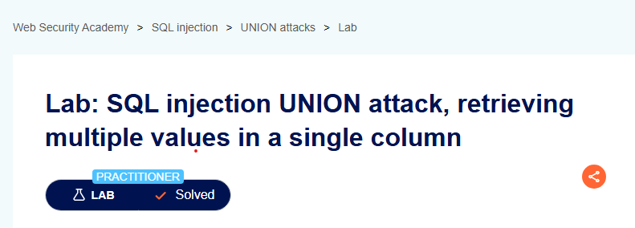

Nivel: PRACTITIONER
Tipo de SQLi: SQL Injection, específicamente mediante SQL UNION Attack, que permite combinar resultados de consultas para obtener información de otras tablas de la base de datos.
Explotar una vulnerabilidad de Inyección SQL en el filtro de categorías de productos para extraer las credenciales (nombres de usuario y contraseñas) de la tabla users. El reto principal radica en que la consulta original solo devuelve una columna que admite datos de tipo texto (string), por lo que es necesario combinar múltiples valores en un solo campo para extraerlos con éxito.
La aplicación web no valida ni sanitiza correctamente la entrada del usuario en el parámetro category, permitiendo que un atacante inyecte consultas SQL arbitrarias. Esto posibilita ejecutar un ataque UNION que combina la consulta original con otra que recupera datos sensibles de la tabla users, exponiendo credenciales almacenadas en la base de datos.
Como es costumbre, abriremos el laboratorio dentro de la web de portswigger, copiando el enlace e iniciando Burp Suite.

Lo primero que haremos será filtrar los productos por alguno de los filtros que aparecen en la cabecera de la lista, con esto conseguiremos capturar una solicitud GET dentro del proxy de burp suite, la cual manda la consulta dentro del enlace, en el parámetro category.

Con el paquete atrapado, ahora podremos editar la solicitud antes de ser enviada al servidor, el único inconveniente es que debemos de cumplir con dos reglas de las bases de datos relacionales: la consulta inyectada debe devolver el mismo número de columnas que la original, y los tipos de datos deben ser compatibles.
Mediante análisis, se observo que la consulta a la BD nos esta devolviendo dos columnas, por lo cual seguiremos la siguiente sintaxis para que nuestras solicitudes sean aceptadas:
'+UNION+SELECT+NULL,'abc'--El uso de NULL en la primera posición evita errores de tipo de dato mientras que 'abc' en la segunda posición confirma que la segunda columna es la que renderiza cadenas de texto en la respuesta HTTP. El -- comenta el resto de la consulta original para evitar errores de sintaxis.
Dando múltiples inspecciones a la base de datos, determinamos que la tabla que contiene a los usuarios se llama users, y la tabla que contiene las contraseñas es password, el problema recae en que solo disponemos de la segunda columna para extraer texto, no podemos pedir username y password en columnas separadas. La solución que proponemos es concatenar ambos campos en uno solo.
Diseñamos el payload que se ingresara en category, el cual es:
'+UNION+SELECT+NULL,username||'~'||password+FROM+users--Utilizamos el operador || para concatenar las dos columnas, al inyectar username||'~'||password, le indicamos a la base de datos que fusione el nombre de usuario y la contraseña, separados por el carácter ~, todo esto se extrae de la tabla users y se acomoda en la única columna de texto disponible.

Con esto comprobamos que nuestro payload fue exitoso, logrando extraer de la consulta principal los usuarios y contraseñas, demostrando una brecha crítica de confidencialidad.
Comprobamos que las credenciales son correctas accediendo a la cuenta de administrador.


Con eso concluimos el laboratorio numero 10 ‘SQL injection UNION attack, retrieving multiple values in a single column’.
Se identificó una vulnerabilidad de SQL Injection en el parámetro category del filtro de productos. La aplicación no valida la entrada del usuario, permitiendo inyectar consultas UNION. Se determinó que la consulta original devuelve dos columnas, de las cuales solo una es de tipo texto y visible. Mediante concatenación con el operador || fue posible extraer los nombres de usuario y contraseñas de la tabla users en un solo campo, logrando acceder como administrador.
'+UNION+SELECT+NULL,username||'~'||password+FROM+users--Este payload cierra la consulta original, inyecta un UNION SELECT que devuelve NULL en la primera columna (para igualar número de columnas) y en la segunda columna concatena username y password separados por ~. El comentario -- elimina el resto de la consulta original.
category.Captura de pantalla que acredita la realización exitosa del laboratorio.
